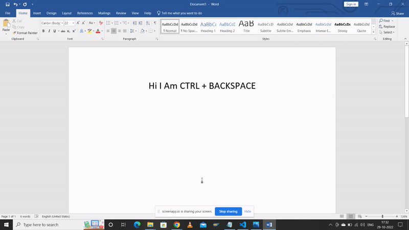
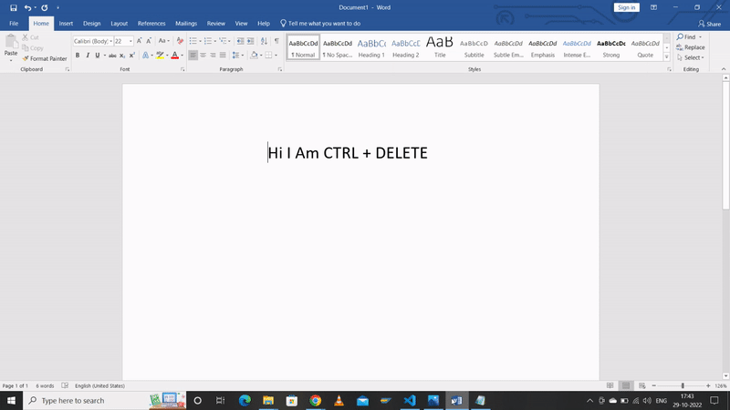
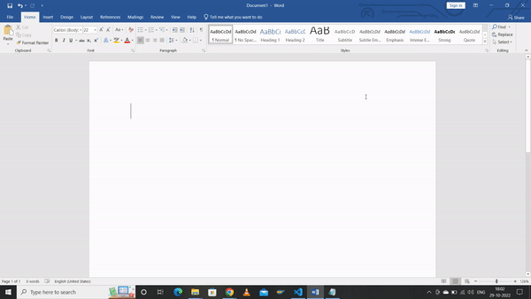
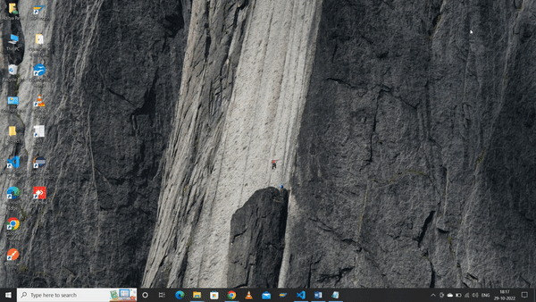

Importanat keyboard Shortcuts To Improve Productivity
1. CTRL + BACKSPACE

Pressing Ctrl + Backspace will delete the last word you typed. In this way you can delete the last words, this is so much faster than pressing the backspace key multiple times.
2. CTRL + DELETE

If you wish to delete a word towards the RIGHT, you can use ctrl + Delete key on your keyboard
3. WIN + V
If you want to access your clipboard history to paste some previous copied contetnt the you can use WIN + V shortcut .
4. WIN + ( UP , DOWN RIGHT , LEFT ) ARROW KEY

If you want to divide your screen into two equal parts or four euqual parts you can use WIN + ARROW KEY shortcut .
5. WIN + E

If you want to open your file explorer use WIN + E shortcut to open .
Bonus Shortcuts
6. WIN + D
If you want to minimize all your opened windows then use WIN + D shortcut .
7. Win+SHIFT + S
If you want to take snap of selected area then you can use WIN+SHIFT+S shorcut .
8. CTRL+Y
Press Ctrl + Y to perform the last thing you did again if it's possible. If Windows can't redo the previous action, nothing will happen.
9. ALT + F4
Use ALT + F4 to close opened window .
10. ALT+TAB
if you want to navigate in your opened tabs thenALT+TAB shortcut is very useful .
11. Click On Mouse Wheel
If you are searching for something and you want to open link in new tab of browser Then just click on your mouse wheel link will open in new tabl .